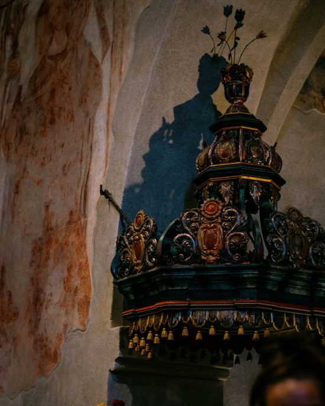

A Vizsolyi Biblia a legrégibb fennmaradt (és ma is használt) teljes, magyar nyelvre lefordított Biblia. A fordítást Károlyi Gáspár és lelkésztársai végezték, a könyv kinyomtatásában pedig Mantskovits Bálint nyomdász segédkezett.
2015 januárjában a vizsolyi Biblia bekerült a hungarikumok közé.
A Biblia teljes magyar fordítását és kinyomtatását Bornemisza Péter már korábban tervbe vette, amikor Mantskovits még nála dolgozott, erről 1580. február 18-án kelt levelének utóirata tanúskodik.